Contents
- EE564 - Design of Electrical Machines
- INTRODUCTION
- Specifications of asynchronous squirrel cage induction motor
- Design Procedure
- Main Design Inputs
- Machine Size
- Stress Factors
- Selection of stator slot number
- Calculation of stator number of turns (Ns)
- STATOR SLOT DIMENSIONS
- ROTOR SLOT DIMENSIONS
- todo Shaft Diameter
- Calculation of Magnetization Current
- Calculation of Magnetizing Inductance
- Calculation of Leakage Inductances
- Series Resistances of Stator&Rotor Windings
- Mass Calculations
- POWER LOSSES
- EFFICIENCY CALCULATION
- FRAMING
- COOLING
- TORQUE_SPEED CHARACTERISTICS
- FEA DRAWINGS AND CONCLUSIONS
- REFERENCES
EE564 - Design of Electrical Machines
%%Project-3: Induction Generator Design %%Name: Olcay BAY %%ID: 1673672
INTRODUCTION
In this project, design of a squirrel cage asynchronous generator for wind turbines will be performed
% circuit % # Calculation of stator to rotor turns ratio % # Torque-speed characteristics % # Determination of basic parameters like starting torque, maximum torque % # Motoranalysis % # Conclusions % # References
Specifications of asynchronous squirrel cage induction motor
Rated Power Output: 250 kW Line to line voltage: 400 V Power factor: 0.87 Rated Wind Speed: 14 m/s Rated Turbine Speed: 24.3 rpm Gear Ratio: 31.2 Frequency: 50 Hz Rated Speed: 758 rpm Gearbox: (Coupled from wind turbine blade) Insulation Class: F (Max. avg:145, Hotspot: 155 ) Duty: Continuous running duty (S1) Efficiency: IE2, 95-96% Ingress protection: IP54 Connection of motor windings:Y Ambient Temperature: 50C
Design Procedure
Design procedure is given by the following flowchart[1]:
clear all; clc; close all; I = imread('Design Procedure.png'); figure; imshow(I); title('Shear Stress For Different Machines','FontSize',16,'FontWeight','Bold');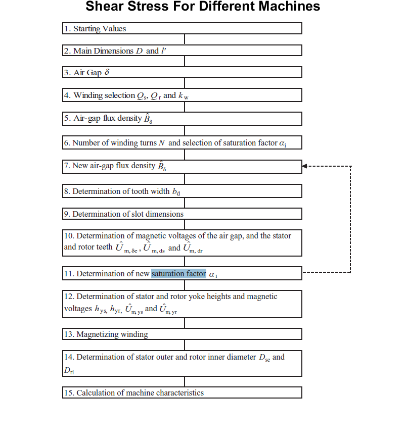
Main Design Inputs
Pout_n = 250e3;% Nominal Output Power, watts pole = 8;%Pole Number p = pole/2;%Pole Pair m = 3;%Number of phases Vn = 400; % Nominal line voltage (l-l) Vphase = Vn/sqrt(3); % Nominal phase voltage fn = 50; %Nominal Frequency, Hz Nsync = 120*fn/pole; % rpm Nrated = 758; %Nominal rotor speed, rpm gear_ratio = 31.2; % pf_expected = 0.86; % n_expected = 0.95; % % u0 = 4*pi*1e-7; Tsurf=90; %Machine Surfeace Temperature Tamb=50; % Ambient Temperature, Worst Case Tw=100; % Average winding temperature Kfe=0.95; % Lamination Factor, for the selected lamination %
Machine Size
Sout_expected=Pout_n/pf_expected;%Expected apparent output power Pmec = Pout_n/n_expected; % watts Irated = Sout_expected/(sqrt(3)*Vn); % amps omega_rot = Nrated*2*pi/60; % rated angular speed of rotor, rad/sec Trated = Pmec/omega_rot; % Rated torque, Power_pp=Pout_n/p; % Power per pole-pair, watts % Power_pp:62500, p:4 from graph given below, Cmech between 200-250. I = imread('Cmec.png'); figure; imshow(I); title('Specific Machine Constant (Cmec) vs power/pole-pair','FontSize',16,'FontWeight','Bold'); %taken as Cmech = 220; % kWs/m^3 % Calculation of the aspect ratio X = (pi/pole)*(p)^(1/3); % aspect ratio fprintf('Aspect ratio: %g\n',X); % diameter^2*length can be calculated by using the Cmec relation: D2L = Pout_n*1e-3/(Cmech*(Nsync/60)); % % From these two information, the inner diameter and length can be calculated: Di_s = (D2L/X)^(1/3); % Stator inner diameter, m Di_s=round(Di_s,3); % round up to 3 decimal places Length = Di_s*X; % Rotor-Stator Length, m Length=round(Length,3); % round up to 3 decimal places % For a 8 pole machine, outer diameter of the stator can be found using: % [T.Miller - Electric Machine Design Course, Lecture-5, Slide4] % The air gap calculation a scale factor of 1.6 is added for heavy duty operation. g = 1e-3*1.6*(0.18+0.006*Pout_n^0.4); % m g= round(g, 4); % round up to 4 decimal places fprintf('Inner diameter of the stator: %g m\n',Di_s); fprintf('Length of the machine: %g m\n',Length); fprintf('Air gap distance: %g mm\n\n',g);
Aspect ratio: 0.623371 Inner diameter of the stator: 0.526 m Length of the machine: 0.328 m Air gap distance: 0.0017 mm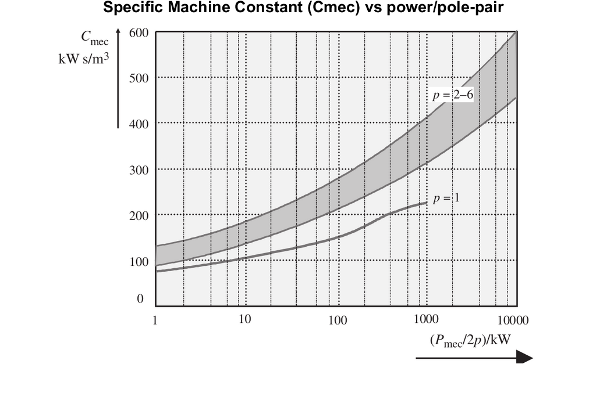
Stress Factors
Calculation of the tangential force using rated torque:
Ftan = Trated/(Di_s*0.5); % Newton surface_area = pi*Di_s*Length; % m^2 % calculation of tangantial stress: StressTangent = 1e-3*Ftan/surface_area; % kPa fprintf('Tangential force: %g Newtons\n',Ftan); fprintf('Tangential stress: %g kPascals\n',StressTangent); % Resulting factor (Ftan_s: 23 kPa) is around given average value in figure: I = imread('shear stress.png'); figure; imshow(I); title('Shear Stress For Different Machines','FontSize',16,'FontWeight','Bold'); %--------------------------------------------------------------------------------------------------------------------------------------- % The magnetic loading of the machine is selected from the table 6.2 of textbook I = imread('Permitted Flux Densities.png'); figure; imshow(I); title('Reasonable Flux Densities','FontSize',16,'FontWeight','Bold'); Bgap = 0.75; % peak magnetic loading of air gap , T fprintf('\nAir gap magnetic loading: %g Tesla\n',Bgap); % Then the electric loading becomes electric_loading =sqrt(2)* StressTangent/Bgap; % kA/m fprintf('Resultant electric loading: %g kA/m\n',electric_loading); % Comparing with the reference values given in Table 6.3 in texbook I = imread('Electrical Loading.png'); figure; imshow(I); title('current densities(J) and linear current densities(A) for various electrical machines','FontSize',16,'FontWeight','Bold'); % As seen, resulting value is acceptable
Tangential force: 12605.6 Newtons Tangential stress: 23.257 kPascals Air gap magnetic loading: 0.75 Tesla Resultant electric loading: 43.8538 kA/m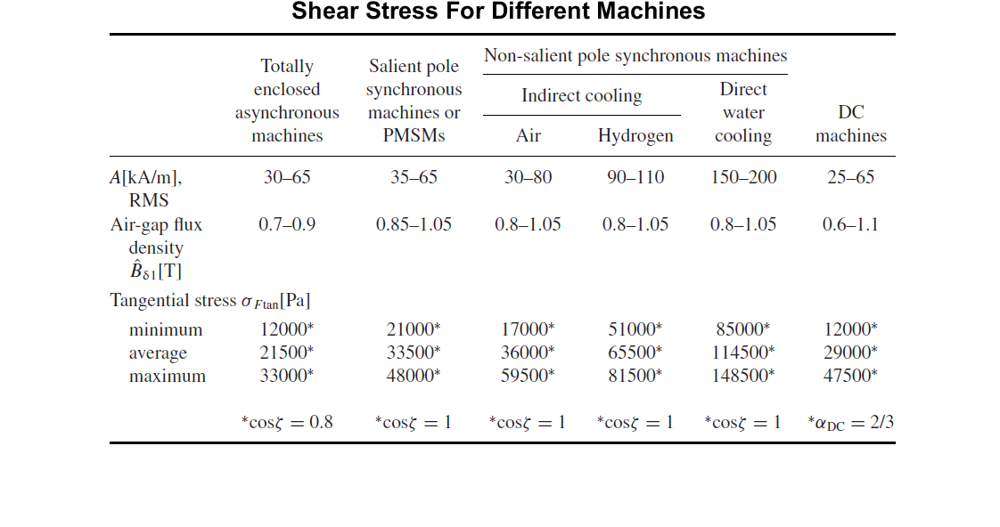 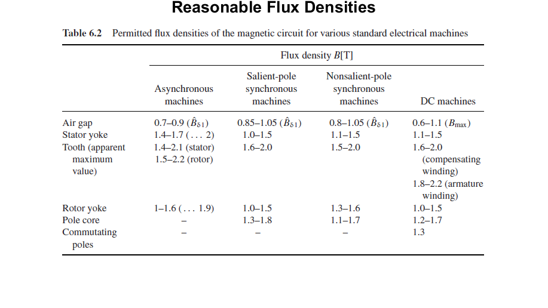 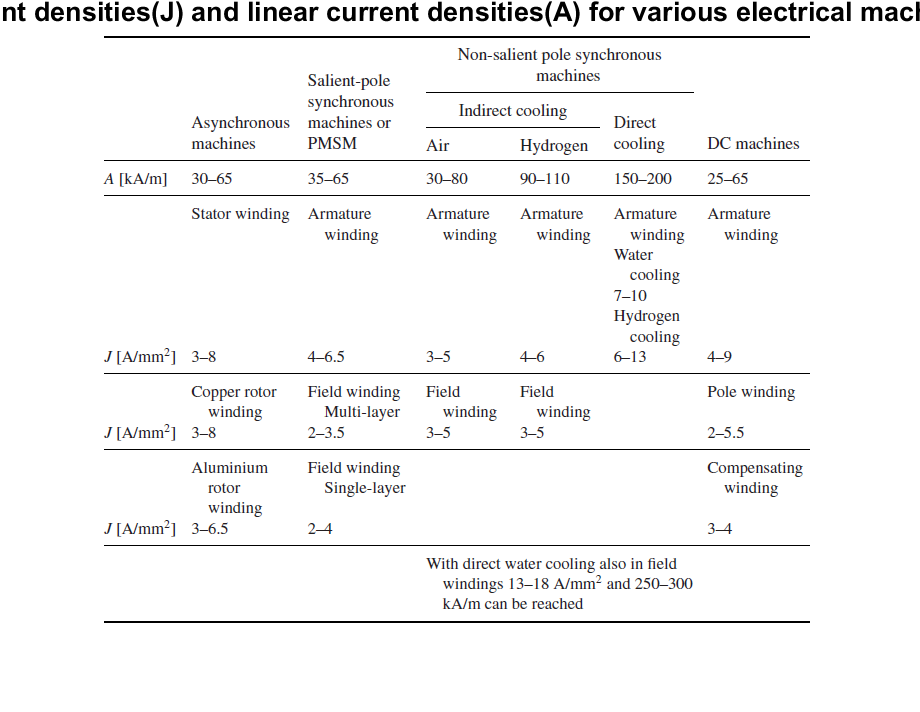
Selection of stator slot number
Stator winding is decided to be a double layer winding,
%stator slot pitch for asynchronous machines is typically in the range of 7-45 mm % Then minimum and maximum number of slots can be calculated by: StatorInnerCircumference = pi*Di_s; % m Qs_max = floor(StatorInnerCircumference/0.007); Qs_min = ceil(StatorInnerCircumference/0.045); fprintf('Possible stator slot numbers: %g -%g \n',Qs_min,Qs_max); % Then possible stator slot numbers resulting an integer slot machine %can be found by k=1; Qs=0; qs=1; fprintf('Possible stator slot numbers(Qs) and resulting qs values:\n'); while (Qs<Qs_max) Qs=m*pole*qs; if (Qs>Qs_min&&Qs<Qs_max) fprintf(' Qs=%d, qs = %d\n',Qs,qs); end qs=qs+1; end % In order to construct a smooth MMF waveform, a large Qs is desirable, % Considering manufacturing difficulties, 96 or 120 would be optimal choice % As a starting point Qs taken as 96 Qs=96; qs=Qs/m/pole; %for pole>4 recomended rotor slot number,Qr given by Qr=1.2Qs (from lecture notes) Qr=round(1.2*Qs); Qr=Qr-mod(Qr,2); % Odd values may cause vibration FullSpan=Qs/pole; CoilSpan=FullSpan; fprintf(' Selected slot numbera Qs=%d, qs=%d, Qr=%d\n',Qs,qs,Qr); %However Qr must be checked in order to prevent unwanted Qs-Qr pairs causing slot harmonics: if ( Qr==(Qs+2*p) || Qr==(Qs-2*p) || Qr==(2*Qs+2*p) || Qr==(2*Qs-2*p) || Qr==(Qs+p) || Qr==(Qs-p) || Qr==(0.5*Qs+p) || Qr==(0.5*Qs-p) ) fprintf(' -----------------------------------improper Qs-Qr pair!!! \n'); end fprintf('---------------------------------------------------------\n'); %Then for two layer winding, PitchRatio=1; fprintf('\n\nWinding factors for full span coil: \n'); for HarmonicOrder=1:2:13 SlotAngle=(2*pi/(Qs/p));% radians kd=sin(qs*HarmonicOrder*(SlotAngle*0.5)) / ( qs*sin(HarmonicOrder*(SlotAngle*0.5)) ); kp=sin(HarmonicOrder*pi/2*PitchRatio); kw=kp*kd; if mod(HarmonicOrder,3)>0 fprintf('kd%d=%4.3f, kp%d=%4.3f, kw%d=%4.3f\n',HarmonicOrder,kd, HarmonicOrder,kp, HarmonicOrder, kw); end end CoilSpan=FullSpan-1; PitchRatio=CoilSpan/FullSpan; fprintf('\n\nWinding Factors for a coil span of %d/%d: \n',CoilSpan, FullSpan); for HarmonicOrder=1:2:13 SlotAngle=(2*pi/(Qs/p));% radians kd=sin(qs*HarmonicOrder*(SlotAngle*0.5)) / ( qs*sin(HarmonicOrder*(SlotAngle*0.5)) ); kp=sin(HarmonicOrder*pi/2*PitchRatio); kw=kp*kd; if mod(HarmonicOrder,3)>0 fprintf('kd%d=%4.3f, kp%d=%4.3f, kw%d=%4.3f\n',HarmonicOrder,kd, HarmonicOrder,kp, HarmonicOrder, kw); end end CoilSpan=FullSpan-2; PitchRatio=CoilSpan/FullSpan; fprintf('\n\nWinding Factors for a coil span of %d/%d: \n',CoilSpan, FullSpan); for HarmonicOrder=1:2:13 SlotAngle=(2*pi/(Qs/p));% radians kd=sin(qs*HarmonicOrder*(SlotAngle*0.5)) / ( qs*sin(HarmonicOrder*(SlotAngle*0.5)) ); kp=sin(HarmonicOrder*pi/2*PitchRatio); kw=kp*kd; if mod(HarmonicOrder,3)>0 fprintf('kd%d=%4.3f, kp%d=%4.3f, kw%d=%4.3f\n',HarmonicOrder,kd, HarmonicOrder,kp, HarmonicOrder, kw); end end
Possible stator slot numbers: 37 -236 Possible stator slot numbers(Qs) and resulting qs values: Qs=48, qs = 2 Qs=72, qs = 3 Qs=96, qs = 4 Qs=120, qs = 5 Qs=144, qs = 6 Qs=168, qs = 7 Qs=192, qs = 8 Qs=216, qs = 9 Selected slot numbera Qs=96, qs=4, Qr=114 --------------------------------------------------------- Winding factors for full span coil: kd1=0.958, kp1=1.000, kw1=0.958 kd5=0.205, kp5=1.000, kw5=0.205 kd7=-0.158, kp7=-1.000, kw7=0.158 kd11=-0.126, kp11=-1.000, kw11=0.126 kd13=0.126, kp13=1.000, kw13=0.126 Winding Factors for a coil span of 11/12: kd1=0.958, kp1=0.991, kw1=0.949 kd5=0.205, kp5=0.793, kw5=0.163 kd7=-0.158, kp7=-0.609, kw7=0.096 kd11=-0.126, kp11=-0.131, kw11=0.016 kd13=0.126, kp13=-0.131, kw13=-0.016 Winding Factors for a coil span of 10/12: kd1=0.958, kp1=0.966, kw1=0.925 kd5=0.205, kp5=0.259, kw5=0.053 kd7=-0.158, kp7=0.259, kw7=-0.041 kd11=-0.126, kp11=0.966, kw11=-0.122 kd13=0.126, kp13=-0.966, kw13=-0.122
When compared to full-pitch coil span, 10/12 seems to provide optimum attenuation values for harmonics the 5th harmonic and 7th harmonics are almost eliminated. 3rd harmonic and multiples will be eliminated on the line-to-line voltages.
%However, elimination of harmonics with distribution and fractional pitch %factor resulted in approximately 8% loss on the fundamental component % This can be easily compansated increasing the number of stator turns or by increasing pole area CoilSpan=FullSpan-2; PitchRatio=CoilSpan/FullSpan; fprintf('---------------------------------------------------------\n'); fprintf('Selected coil span: %d/%d: \n',CoilSpan, FullSpan); kd1=sin(qs*(SlotAngle*0.5)) / ( qs*sin(SlotAngle*0.5) ); kp1=sin(pi/2*PitchRatio); kw1=kp1*kd1; fprintf('---------------------------------------------------------\n');
--------------------------------------------------------- Selected coil span: 10/12: ---------------------------------------------------------
Calculation of stator number of turns (Ns)
Under the rated phase voltage, required number of series turns in a phase can be found using expected air gap flux and determined machine dimensions and winding factor: pole flux 2/pi*Bpeak*Ts*Length
Flux_PerPole = 2*Di_s*Length*Bgap/pole; % weber Ns = Vphase/(4.44*fn*Flux_PerPole*kw1); % number of conductorsin a phase: Ns_cu=Ns*2; fprintf('required number of series turns in a phase,Ns : %g\n', Ns); % For a double layer winding SemiSlotPerPhase=2*Qs/m; % Then the number of turns per semi slot (SzQ) can be found by: SzQ = round(Ns_cu/SemiSlotPerPhase); zQs= SzQ*2; fprintf('number of series conductors in a slot,zQ: %g\n', zQs); Ns_old=Ns; Ns=zQs*p*qs; fprintf('----updated Ns:%g\n', Ns); % Resulting winding diagram is given in figure: I = imread('Winding Diagram.png'); figure; imshow(I); title('Stator Winding Diagram','FontSize',16,'FontWeight','Bold'); % Although updated Ns is very close to calculated value, in order to keep air gap flux density at desired level, % Machine dimensions must be scaled accordingly: Di_s_new=sqrt(Di_s^2*X*Ns_old/(X*Ns)); L_new=X*Di_s_new; Di_s=round(Di_s_new,3); % round up to 3 decimal places L_s=round(L_new,3); fprintf('Updated inner diameter of the stator: %g m\n',Di_s); fprintf('Updated length of the machine: %g m\n',Length); Bgap_actual = Vphase*pole/(4.44*Ns*fn*kw1*4*Length*Di_s*0.5); % Tesla Bgap=Bgap_actual;% Update Bgap Flux_PerPole = 2*Di_s*Length*Bgap_actual/pole; % weber Ns = Vphase/(4.44*fn*Flux_PerPole*kw1); Ts=pi*Di_s/Qs; %Slot pitch %for simplicity initially saturation factor taken as 1
required number of series turns in a phase,Ns : 34.764 number of series conductors in a slot,zQ: 2 ----updated Ns:32 Updated inner diameter of the stator: 0.548 m Updated length of the machine: 0.328 m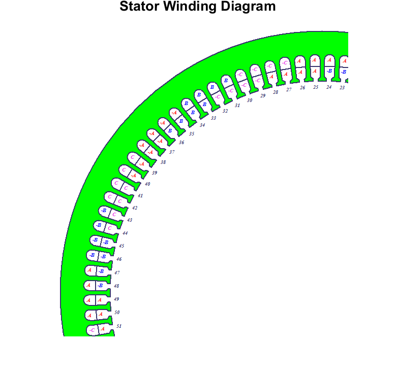
STATOR SLOT DIMENSIONS
I = imread('Stator Slot Dimensions.png'); figure; imshow(I); title('Stator Slot Dimensions','FontSize',16,'FontWeight','Bold'); % MMF calculation is important to check whether the air gap flux density Js=5e6; %current density for stator (A/m2) A_Cu=Irated/Js; %required copper cross section (mm2) %Skin depth for Copper at %50 Hz 10mm, copper diameter must be smaller than %20mm, considering slot opening: dcu=2.91e-3; %wire diameter (m) fprintf('\n\nwire diameter(stator) %g(mm)-AWG9\n',dcu*1e3); Strands= ceil(A_Cu/(pi*dcu*dcu/4)); fprintf('Number of strands=%g\n',Strands); A_Cu=Strands*pi*(dcu/2)^2; % updated Kf=0.3; %copper fill factor Ass=A_Cu/Kf; % Slot area, mm2 fprintf('Slot Area=%g mm2\n',Ass*1e6); B_ts=1.5; % Average tooth flux From Table 6.2 (1.4T-2.1T) b_os=3e-3; %m, slot opening typically selected as 3mm opening must allow wire insertion during manufacturing h_os=1e-3;%m h_w=1e-3;%m b_ts=((Bgap*Ts)/(Kfe*B_ts)) ;% stator tooth width, bds,m b_s1=(pi*(Di_s+2*(h_os+h_w))/Qs)-(b_ts); % b4 (book notation) b_s2 = 1.2*b_s1; % from FEA model !!!!! h_s=2*Ass/(b_s1+b_s2); fprintf('The height of slot=%g mm\n',h_s*1e3); % Outer diameter of machine typically defined as 1.66*inner diameter for an % 8 pole machine, however a more optimum selection can be obtained as B_sbc=1.4;% Back core flux density % For the calculation of the height of the stator back iron or yoke (hcs), h_cs=Flux_PerPole/(2*Length*B_sbc);% m fprintf('The height of stator back iron(h_cs): %g mm\n',h_cs*1e3); Do_s = (Di_s+2*(h_os+h_w+h_s+h_cs)); % m Do_s=round(Do_s,3); % round up to 3 decimal places fprintf('Outer diameter of the stator: %g m\n',Do_s);
wire diameter(stator) 2.91(mm)-AWG9 Number of strands=13 Slot Area=288.203 mm2 The height of slot=31.866 mm The height of stator back iron(h_cs): 38.2656 mm Outer diameter of the stator: 0.692 m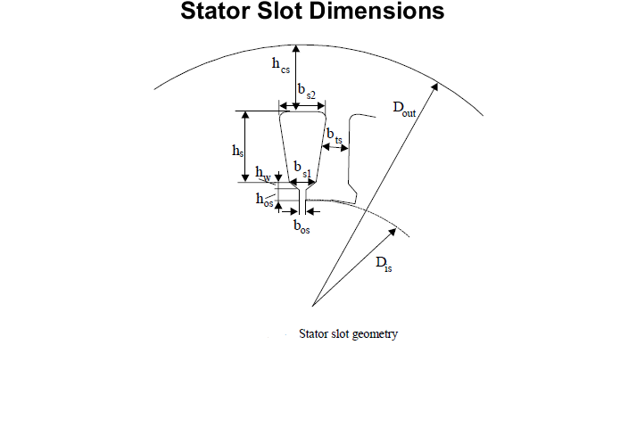
ROTOR SLOT DIMENSIONS
Rotor Bar Current Calculations pg320 in [1]
I = imread('Rotor Slot Dimensions.png'); figure; imshow(I); title('Rotor Slot Dimensions','FontSize',16,'FontWeight','Bold'); Ir=zQs*Qs/Qr*Irated*pf_expected; Iring=Ir/(2*sin(pi*p/Qr)); Jr=4*1e6; %current density for rotor bar (A/m2) Jring=4*1e6; %current density for rotor bar (A/m2) A_bar=Ir/Jr; % Rotor Bar Crossection, m2 A_ring=Iring/Jring; % Rotor Bar Crossection, m2 Tr=(pi*(Di_s-(2*g)))/Qr; % Rotor slot pitch, m B_tr=1.6 ;%T, Rotor tooth flux density b_tr=Bgap*Tr/(B_tr*Kfe) ;%Rotor tooth width to prevent rotor flux density from saturization % Typical values assigned for slot opening and tooth hat h_or = 2*1e-3; % m b_or = 2*1e-3; % m % upper diameter and lower diameter of the slot can be approximated as d_r1=Tr-b_tr; d_r2=0.5*d_r1; %approximating tear-shaped bar as a triangle with a safety factor of 1.2, Ar= (h_r*(2*d_r1)/2*1.2 h_r=A_bar/1.2/d_r1; % Flux path in the rotor follows a similar behaviour as in the stator % Then, calculation of rotor back core height (h_cr): B_rbc=1.2;% Rotor back core flux density h_cr = Flux_PerPole/(2*Length*B_rbc); % m fprintf('The height of the rotor back iron(hcr): %g mm\n',1e3*h_cr); Di_r=Di_s-2*(g+h_r+h_cr+d_r1+d_r2); Do_r=Di_s-2*g; %End Ring Dimensions h_ring=h_r+0.5*(d_r1+d_r2); w_ring=A_ring/h_ring;
The height of the rotor back iron(hcr): 44.6432 mm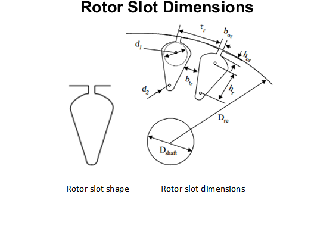
todo Shaft Diameter
Calculation of Magnetization Current
I = imread('Core Material.png'); figure; imshow(I); title('Properties of the Selected Core Material','FontSize',16,'FontWeight','Bold'); %-- % Curve Fitting function for H-B curve x=[0,10,25,50,100]; % From material catalog y=[0.0,1.5,1.59, 1.68, 1.80]; x=1e2*transpose(x); y=transpose(y); HBCurve=fit(x,y,'linearinterp'); plot(HBCurve,x,y); BHCurve=fit(y,x,'linearinterp'); %-- %Carters Coefficient calculation for Stator be = b_os*(b_os/g)/(5+b_os/g); kcs = Ts/(Ts-be); %-- %Carters Coefficient calculation for Rotor be = b_or*(b_or/g)/(5+b_or/g); kcr = Tr/(Tr-be); kc=kcs*kcr; fprintf('\n\nCarter Coefficient=%g\n',kc); g_eff = g*kc; %--TODO Add Cooling Duct %-- H_gap=Bgap/u0; MMF_gap=H_gap*g_eff; fprintf('H of the air gap: %g A/m\n',H_gap); fprintf('MMF(peak) on the air gap: %g A\n',MMF_gap); % The stator teeth MMF and back iron MMF can be calculated by using the % selected tooth and yoke flux density. H_ts = BHCurve(B_ts); % A/m MMF_ts = H_ts*(h_s+h_os+h_w); % Amps fprintf('H of the stator teeth: %g A/m\n',H_ts); fprintf('MMF(peak) on the stator teeth: %g A\n',MMF_ts); H_sbc = BHCurve(B_sbc); % A/m MMF_sbc = H_sbc*h_cs; % Amps fprintf('H stator back core: %g A/m\n',H_sbc); fprintf('MMF(peak) on the stator back core: %g A\n',MMF_sbc); % Same B-H data can be used. The rotor teeth MMF and back iron MMF can be % calculated by using the selected tooth and yoke flux density. H_tr = BHCurve(B_tr); % A/m MMF_tr = H_tr*(h_r+h_or+(d_r1+d_r2)/2); % Amps fprintf('H of the rotor teeth: %g A/m\n',H_tr); fprintf('MMF(peak) on the rotor teeth: %g A.\n',MMF_tr); H_rbc = BHCurve(B_rbc); % A/m MMF_rbc = H_rbc*(h_cr); % Amps fprintf('H of the rotor back core:%g A/m.\n',H_rbc); fprintf('MMF(peak) on the rotor back core: %g A\n',MMF_rbc); Peak_MMF=MMF_gap+MMF_ts+MMF_sbc+MMF_tr+MMF_rbc; Imag=Peak_MMF/(4/pi*(m/2)*(Ns/pole)*kw1*sqrt(2)); % amps fprintf('Magnetizing current %g Amps(rms)\n',Imag);
Carter Coefficient=1.07286 H of the air gap: 622352 A/m MMF(peak) on the air gap: 1135.09 A H of the stator teeth: 1000 A/m MMF(peak) on the stator teeth: 33.866 A H stator back core: 933.333 A/m MMF(peak) on the stator back core: 35.7146 A H of the rotor teeth: 2777.78 A/m MMF(peak) on the rotor teeth: 69.005 A. H of the rotor back core:800 A/m. MMF(peak) on the rotor back core: 35.7146 A Magnetizing current 131.02 Amps(rms)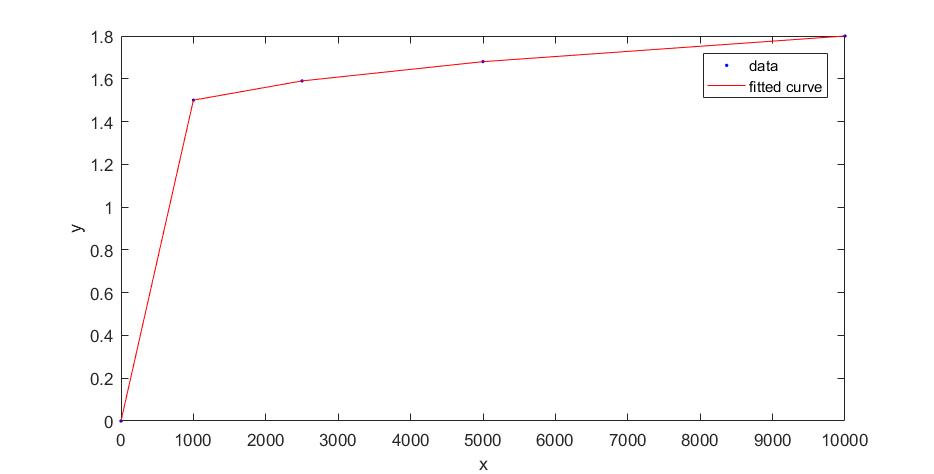
Calculation of Magnetizing Inductance
Assuming all 8 poles are identical physically,
%Then, we can accept that the all windings belong to the same phase link same flux % However, since 2/m of the pole flux related/created by individual phase % currents, % Equivalent circuit magnetizing current can be expressed as Lm=Ns*2/m*Flux_PerPole/Imag; Xm = 2*pi*fn*Lm; % Ohms % Validation Imag2 = Vphase/(Xm); % amps fprintf('Magnetizing inductance (phase) %g mH\n',Lm*1e3);
Magnetizing inductance (phase) 5.7222 mH
Calculation of Leakage Inductances
Calculation of stator leakage inductance is based on the equations derived in class
% Calculation of stator leakage inductance is again based on the equation % derived in class. The leakage reactance is also calculated at rated % frequency. P_s = u0*Length*((h_os/b_os)+(h_s/(3*b_s2))); % permeance Ls = P_s*4*(Ns*kw1)^2*m/Qs; % Henries fprintf('\n\nThe stator leakage inductance of the machine %g uH\n',Ls*1e6); % Calculation of rotor leakage inductance is a little more tricky because % both rotor bar and end ring permeances are considered this time. % The leakage reactance is also calculated at rated frequency. Pr = 0.66 + 2*h_r/(3*(d_r1+d_r2)) + h_or/b_or; % permeance Pdr = 0.9*Tr/(kcs*g_eff)*1e-2; % permeance Kx = 1; % skin effect coefficient P2 = u0*Length*(Kx*Pr+Pdr); % permeance of rotor bar Lr_s = P2*4*(Ns*kw1)^2*m/Qr; % Henries, reflected to stator side fprintf('The rotor leakage inductance referred to the stator: %g uH\n',Lr_s*1e6);
The stator leakage inductance of the machine 63.6501 uH The rotor leakage inductance referred to the stator: 106.097 uH
Series Resistances of Stator&Rotor Windings
For the calculation of stator winding resistance of one phase, its length is first calculated considering both machine length and end windings.
Cu_span = CoilSpan*Ts; % Conductor span= Coil Span*Slot pitch Lend=1.2*Cu_span; % end winding length MLT_s = 2*(Length+Lend)+0.1; % m; % increase of MLT due to stranding ignored fprintf('The resultant end winding length: %g m\n',Lend); fprintf('The mean length turn (MLT) of stator: %g m\n',MLT_s); % Average winding temperature Tw taken as 75C rho_cu20 = 1.68*1e-8; % ohm*m rho_cuTw = rho_cu20*(1+0.00386*(Tw-20)); % ohm*m Rs_sdc = rho_cuTw*MLT_s*Ns/A_Cu; % ohms Rs_s = Rs_sdc; % Since the conductor is stranded AC resistance can be taken equal to Rs_dc fprintf('The AC resiatance of the stator phase winding: %g mOhms\n',Rs_s*1e3); % % The calculation of rotor bar resistance . rho_Al20 = 2.65*1e-8; % ohm*m rho_AlTw = rho_Al20*(1+.00429*(Tw-20)); % ohm*m del_Al=sqrt(rho_AlTw/(pi*fn*u0)); fprintf('Skin depth of rotor bars at operating Temperature: %g mm\n',del_Al*1e3); % As the diameter of rotor bar thicknes close to skin depth from [2], % Rac/Rdc can be taken as 1; Kr = 1; %Rac/Rdc %Calculation of resistance of the individual rotor bars. R_bar=Kr*rho_AlTw*Length/A_bar; %Calculation of resistance of the part of the ring belonging to one bar. Length_ring = pi*(Do_r-h_or-d_r1)/Qr; % approximately, m R_ring=Length_ring*rho_AlTw/A_ring; % Eqn 7.46 from textbook Rs_r = R_bar + R_ring/(2*(sin(pi*p/Qr))^2); Rs_r_s = Rs_r*4*m/Qr*(Ns*kw1)^2; % referred to primary,ohms fprintf('The rotor resistance referred to the stator: %g mOhms\n',Rs_r_s*1e3);
The resultant end winding length: 0.215199 m The mean length turn (MLT) of stator: 1.1864 m The AC resiatance of the stator phase winding: 9.65481 mOhms Skin depth of rotor bars at operating Temperature: 13.4285 mm The rotor resistance referred to the stator: 9.98516 mOhms
Mass Calculations
Copper mass
Copper_density = 8.96*1e3; % kg/m^3 Aluminum_density=2.70*1e3; % kg/m^3 Steel_density = 7.8*1e3; % kg/m^3 Length_Cu = m*MLT_s*Ns; % m V_Cu = A_Cu*Length_Cu; % m^3 M_Cu = Copper_density*V_Cu; % kg fprintf('Total copper mass: %g kg\n',M_Cu); % Aluminium mass Length_Al1 = Qr*Length; % m Length_Al2=2*Qr*Length_ring; %Two rings, m V_Al = A_bar*Length_Al1 + A_ring*Length_Al2; % m^3 M_Al=Aluminum_density*V_Al; fprintf('Total aluminium mass: %g kg\n',M_Al); % Stator iron (core) mass M_ts = Steel_density*Qs*b_ts*(h_s+h_w+h_os)*Length*Kfe; %Stator teeth mass, kg M_sbc =Steel_density*pi/4*(Do_s^2-(Do_s-2*h_cs)^2)*Length*Kfe; % kg M_tr = Steel_density*Qr*b_tr*(h_r+(d_r1+d_r2)/2)*Length*Kfe; % kg M_rbc =Steel_density*pi/4*(Do_r^2-Di_r^2)*Length*Kfe; % kg M_total_steel = M_ts + M_sbc+M_tr + M_rbc; fprintf('Total mass steel mass: %g kg\n',M_total_steel); M_total_inner=M_Cu+M_Al+M_total_steel; % excluding case fprintf('Total machine mass exluding case: %g kg\n',M_total_inner);
Total copper mass: 88.2326 kg Total aluminium mass: 21.6103 kg Total mass steel mass: 580.365 kg Total machine mass exluding case: 690.208 kg
POWER LOSSES
%Conduction Loss Pcu = 3*Irated^2*(Rs_s+Rs_r_s); % watts fprintf('Total copper loss: %g Watts\n',Pcu); %Core Loss % 35JN300: 1.1W/kg @1.0T, 2.6W/kg @1.5T @50Hz % Simplified Steinmetz Eqn. for 35JN300 : Pcore=Cx*B^beta at 50Hz Pc1=1.1; Pc2=2.6; Tc1=1; Tc2=1.5; beta=log(Pc1/Pc2)/(log(Tc1)-log(Tc2)); Cx=Pc1/Tc1^beta; Pcore_st = Cx*B_ts^beta*M_ts; % watts, Stator Teeth Core Loss Pcore_sbc=Cx*B_sbc^beta*M_sbc; % watts, Stator Yoke Core Loss Pcore_rt = Cx*B_tr^beta*M_tr; % watts, Stator Teeth Core Loss Pcore_rbc=Cx*B_rbc^beta*M_rbc; % watts, Stator Yoke Core Loss % stator total core loss (fundamental) fprintf('stator teeth core loss @50Hz %g Watts\n',Pcore_st); fprintf('stator back core loss @50Hz %g Watts\n',Pcore_sbc); fprintf('rotor teeth core loss @50Hz %g Watts\n',Pcore_rt); fprintf('rotor back core loss @50Hz %g Watts\n',Pcore_rbc); Pcore=Pcore_st+Pcore_sbc+Pcore_rt+Pcore_rbc; fprintf('Total core loss @50Hz %g Watts.\n',Pcore); % Representation of Core Loss in Equivalent Circuit Rcore = Vphase^2/(Pcore/3); % Ohms fprintf('The core loss resistance: %g Ohms\n',Rcore); % Friction and Windage Losses % An rough estimation taken for Friction and Windage Losses. P_fw = 0.008*Pout_n; % watts
Total copper loss: 10373 Watts stator teeth core loss @50Hz 202.205 Watts stator back core loss @50Hz 429 Watts rotor teeth core loss @50Hz 145.71 Watts rotor back core loss @50Hz 425.463 Watts Total core loss @50Hz 1202.38 Watts. The core loss resistance: 133.07 Ohms
EFFICIENCY CALCULATION
TotalLoss=P_fw+Pcore+Pcu; n_estimated = Pout_n/(Pout_n+TotalLoss); fprintf('Total Loss of the Generator: %g kW\n',TotalLoss*1e-3); fprintf('Efficiency of the Generator: %4.2f %%\n',100*n_estimated);
Total Loss of the Generator: 13.5754 kW Efficiency of the Generator: 94.85 %
FRAMING
I = imread('Frame of the Generator.png'); figure; imshow(I); title('Selected Frame for the Generator','FontSize',16,'FontWeight','Bold');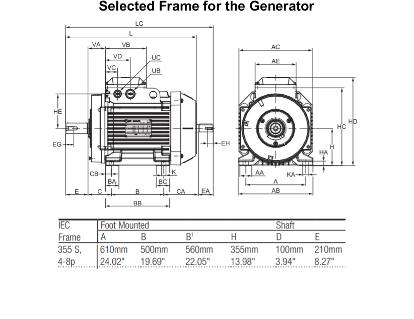
COOLING
I = imread('Cooling.png'); figure; imshow(I); title('Cooling of the Machine','FontSize',16,'FontWeight','Bold'); Emissivity=0.85; %Black Coated CaseLength=0.5; CaseDiameter=0.7; CaseSurface=2*pi*CaseDiameter*CaseLength*0.5; fprintf('Surface Area of the case: %4.2f m2\n',CaseSurface); % Radiation Prad=CaseSurface*0.85*5.67*1e-8*((273+Tsurf)^4-(273+Tamb)^4); fprintf('Radiated Heat: %4.2f W\n',Prad); % Heat Dissipation with conduction is also negligible % Convection CaseSurfaceFin=CaseSurface*5; % Calculation of Convection Coefficient Eqn 9.55 Vair=7; % m/s blowed over the surface of the machine via a shaft mounted fan hconv=3.89*sqrt(Vair/CaseLength); %W/m2K fprintf('Convection Coefficient: %g W/m2K\n',hconv); Pconv=CaseSurfaceFin*(Tsurf-Tamb)*hconv; fprintf('Blowed Heat: %g W\n',Pconv); % Dissipated heat is not enough to satisfy machine losses % Designed should be revised for open case and/or Specified temperatures must be increased
Surface Area of the case: 1.10 m2 Radiated Heat: 343.32 W Convection Coefficient: 14.555 W/m2K Blowed Heat: 3200.82 W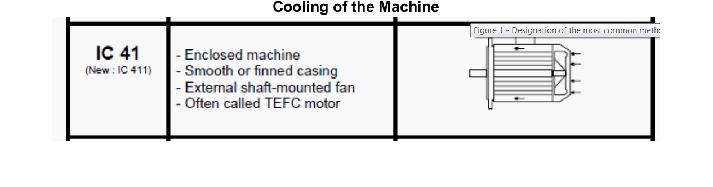
TORQUE_SPEED CHARACTERISTICS
Obtain the variables that will be used in the torque equation:
wsync = Nsync*2*pi/60; % rad/sec % Thevenin variables Zm = (1j*Xm*Rcore)/(1j*Xm+Rcore); % ohms Xs = 2*pi*fn*Ls; % ohms @ 50 Hz Xr_s=1.5*2*pi*fn*Lr_s; % ohms @ 50hz Zs = Rs_s+1j*Xs; % ohms Vth = Vphase*Zm/(Zs+Zm); % volts Zth = Zs*Zm/(Zs+Zm); % ohms Rth = real(Zth); % ohms Xth = imag(Zth); % ohms % Slip (and rotor speed) array s = 0.05:-0.005:-0.5; Nr = Nsync*(1-s); % rpm wr = Nr*2*pi/60; % rad/sec % Torque array using the calculated variables and slip variation Tm = (3*(abs(Vth))^2/wsync)*(1./ ( (Rth+Rs_r_s./s).^2 + (Xth+Xr_s)^2 ) ).*(Rs_r_s./s); % Nm % At synchronous speed, torque will be zero (avobe equation cannot calculate) Tm((s==0)) = 0; % Nm Pm=wr.*Tm; % Plot the torque-speed curve figure; hold on; xlabel('Rotor speed (rpm)','Fontweight','Bold'); yyaxis left plot(Nr,-1e-3*Tm,'b'); ylabel('Torque (kNm)','Fontweight','Bold'); ylim([-20 30]); yyaxis right plot(Nr,-1e-3*Pm,'r'); ylabel('Power (kW)','Fontweight','Bold'); ylim([ -1e2 2.5e3]); title ('Torque-Speed Characteristic of the Machine','Fontweight','Bold'); grid on; grid minor; hold off;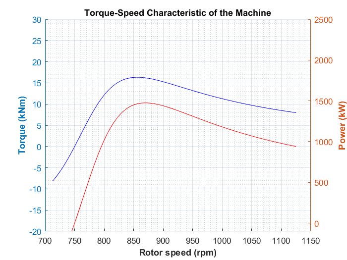
FEA DRAWINGS AND CONCLUSIONS
In general, FEA results verify the analyctical calculations, however, there is a significant difference between Torque-Speed characteristics obtained by the two methods. Which is mainly caused by the difference between rotor leakage reactance obtained by this two methods. Analyticaly calculated leakage reactance value is almost half of the simulation value.
I = imread('RatedMagneticData.png'); figure; imshow(I); title('Magnetic Data','FontSize',16,'FontWeight','Bold'); I = imread('Material Consumption.png'); figure; imshow(I); title('Material Consumption Data','FontSize',16,'FontWeight','Bold'); I = imread('RatedPerformance.png'); figure; imshow(I); title('Performance Indicators','FontSize',16,'FontWeight','Bold'); I = imread('Rated Parameters.png'); figure; imshow(I); title('Rated Parameters','FontSize',16,'FontWeight','Bold'); I = imread('T-P vs Speed in Generation Mode_RMxprt.png'); figure; imshow(I); title('T-P vs Speed Charactristic of the Generator','FontSize',16,'FontWeight','Bold'); I = imread('Efficiency_RMxprt.png'); figure; imshow(I); title('Efficiency Curve of the Generator','FontSize',16,'FontWeight','Bold'); I = imread('PowerFactor_RMxprt.png'); figure; imshow(I); title('Power Factor Variation wrt Speed','FontSize',16,'FontWeight','Bold'); % Operating point and efficiency curve of the designed machine is very % close to the specified values. Magnetic flux density values calculated by the simulation program %are similar to the analytical values. However, air gap flux density has not a sinusoidal distribution % as expected. I = imread('Air Gap Flux Density.png'); figure; imshow(I); title('Air Gap Flux Density','FontSize',16,'FontWeight','Bold'); I = imread('FluxDensity_Machine_Maxwell2D.png'); figure; imshow(I); title('Flux Density Distribution of the Machine','FontSize',16,'FontWeight','Bold'); I = imread('Bvector.png'); figure; imshow(I); title('Magnetic Flux Density Orientation','FontSize',16,'FontWeight','Bold'); I = imread('FluxDensity_Tooth_Maxwell2D.png'); figure; imshow(I); title('Flux Density Distribution of the Tooth','FontSize',16,'FontWeight','Bold'); I = imread('FluxDensity_Yoke_S_Maxwell2D.png'); figure; imshow(I); title('Flux Density Distribution of the Stator Back Core','FontSize',16,'FontWeight','Bold'); % To sum up, results show two mismatches: PF and dissipated heat both requies additonal study. % At the and of this study, a valuable experience on a useful well-known FEA simulation software and % on the anatomy of an Asynchronous Machine.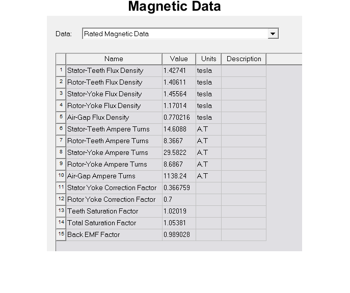 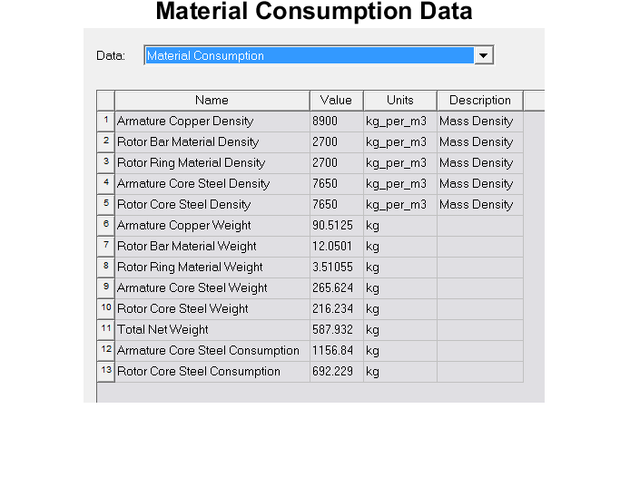 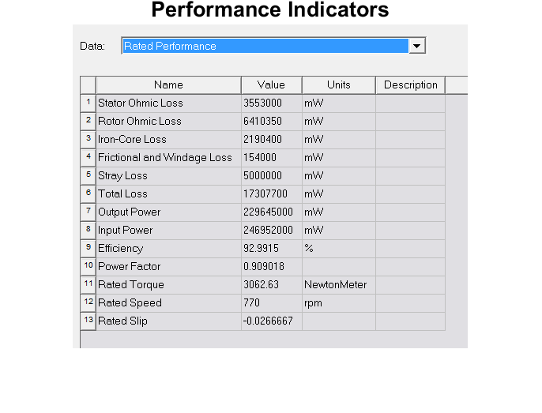 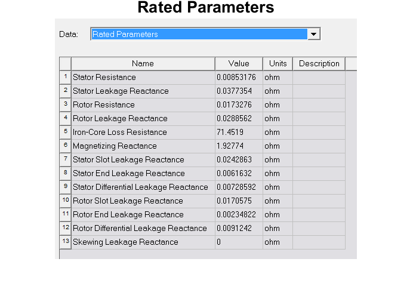 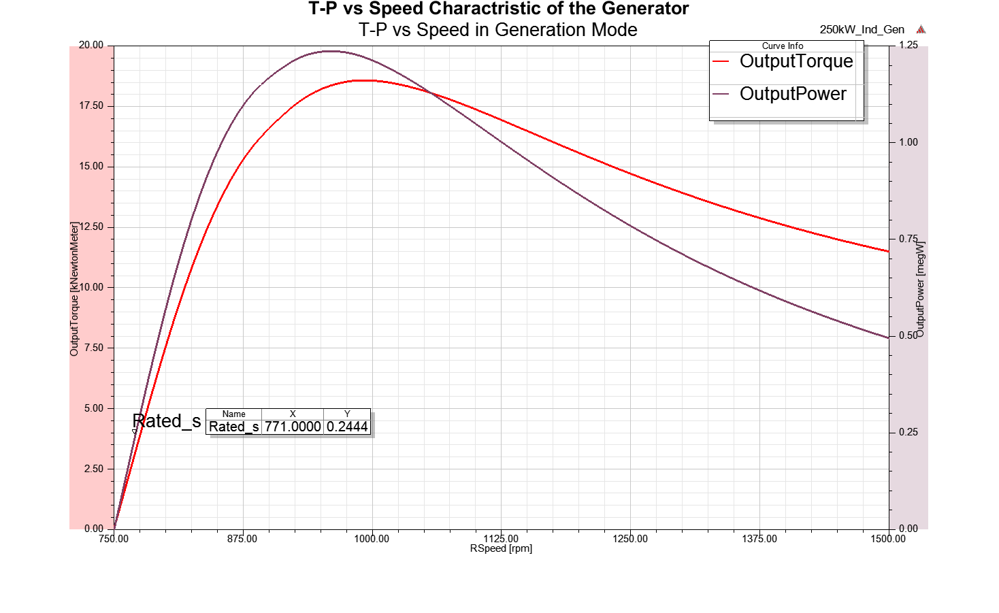 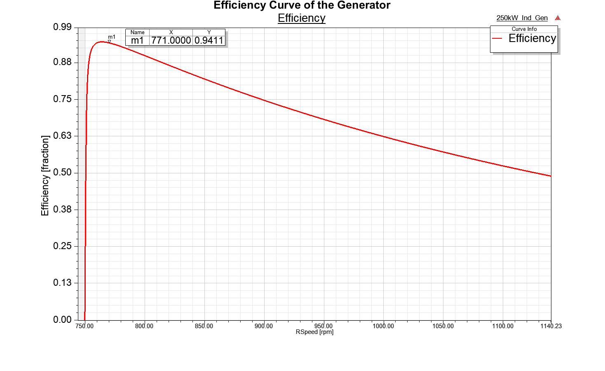 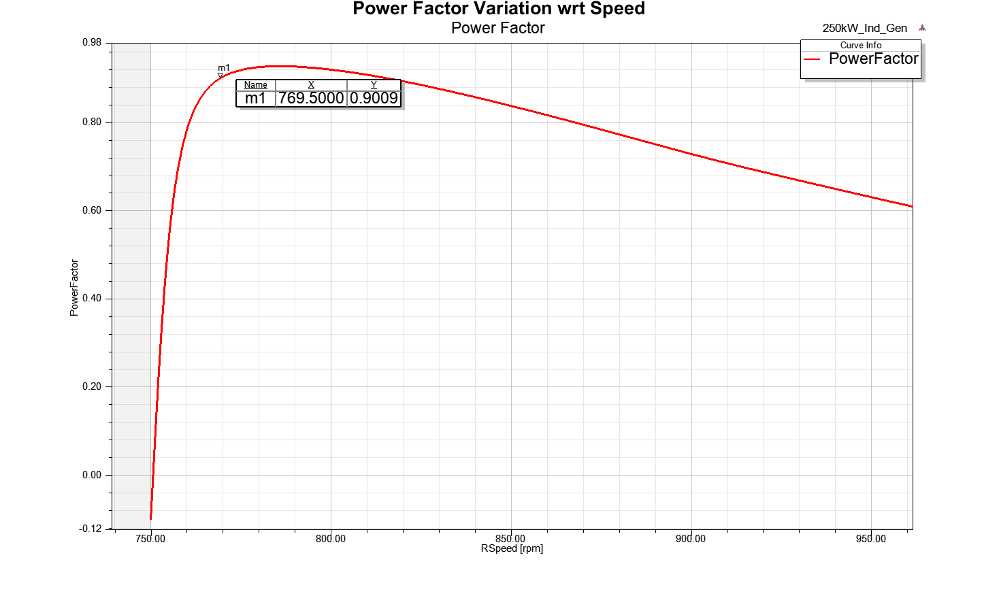 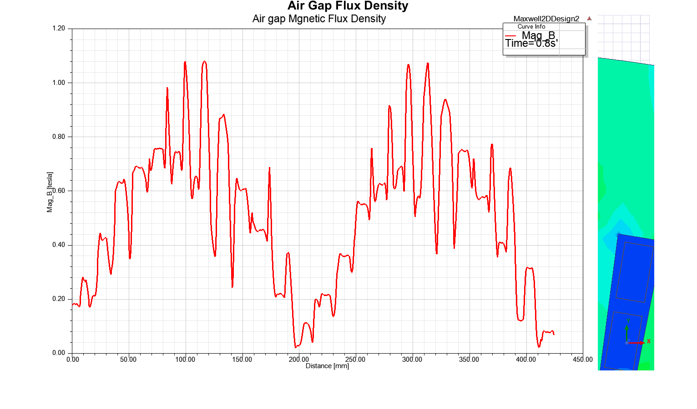 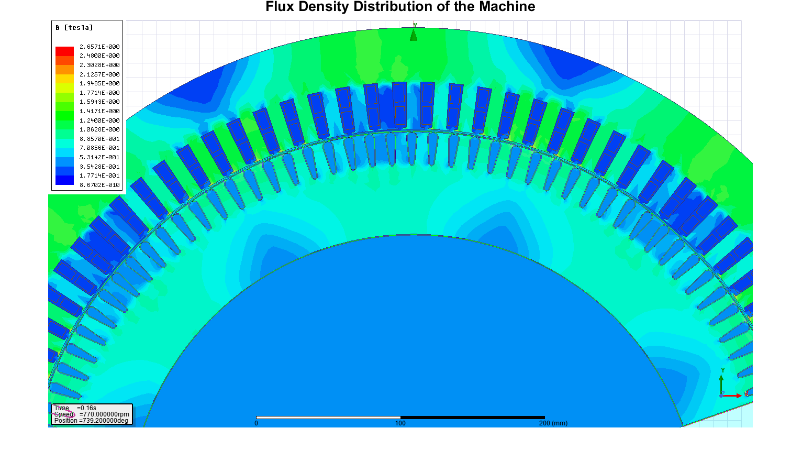 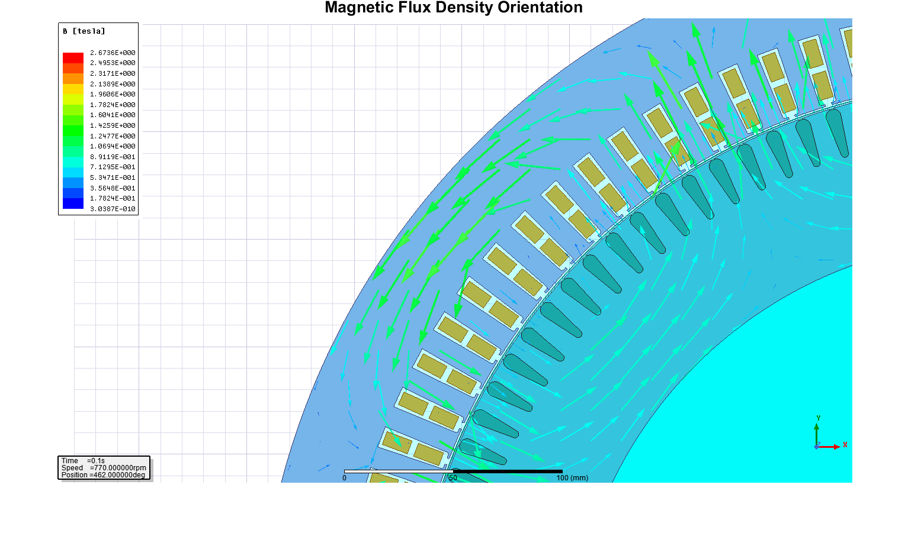 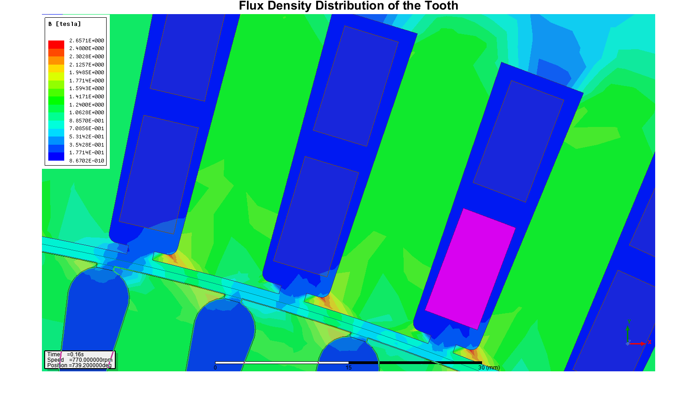 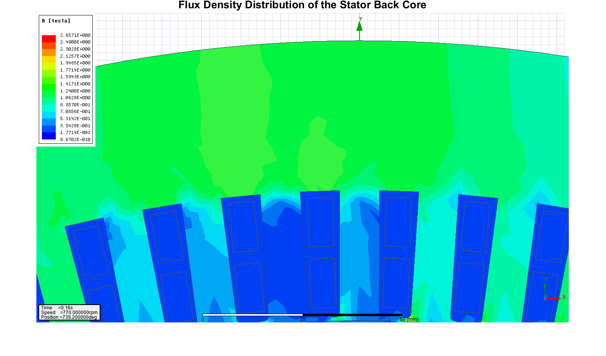
REFERENCES
[1] Pyrhonen, J., Jokinen, T., & Hrabovcova, V. (2013). Design of rotating electrical machines. John Wiley & Sons.
%[2] http://www.ti.com/lit/ml/slup125/slup125.pdf %[3] http://www.regalbeloit.eu/catalogues/Insulation_Class_Explanantion.pdf